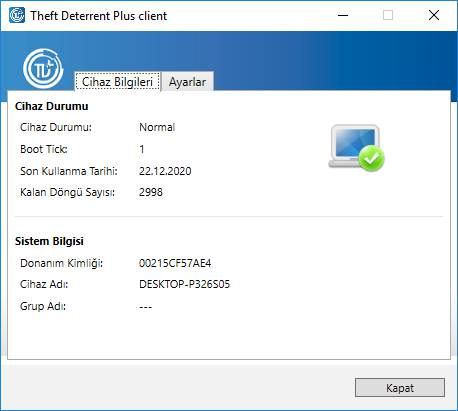
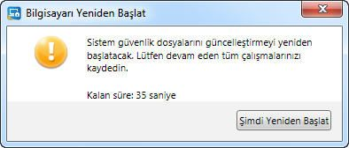
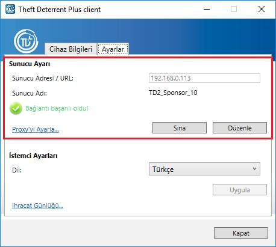
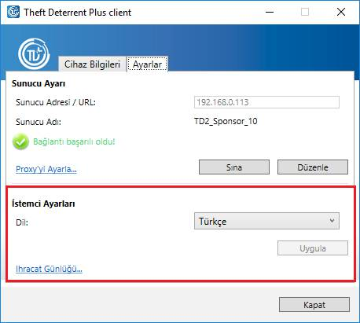
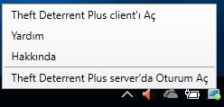

Theft Deterrent Plus client Durumunu Görüntüleme ve Doğrulamak
İstemcinin durumunu ve ayarlarını
görüntülemek ve doğrulamak üzere istemciyi açmak için, masaüstündeki Theft Deterrent Plus client uygulama
simgesini
 tıklatın.
tıklatın.

Cihaz Bilgileri sayfasında, istemci durumu tablosunda bulunan durum simgesini kontrol edin. Bir hata iletisi görürseniz, hata iletileri tablosuna bakın.
Aşağıdaki bilgiler Cihaz Bilgileri sayfasında görüntülenir:
Cihaz Durumu |
|
Cihaz Durumu |
İstemcinin durumu. |
Boot Tick |
İstemci sunucudan başarıyla bir paket uyguladıktan sonra 1 artan bir onaltılık sayıdır. |
Son Kullanma Tarihi |
Cihazın kilitleneceği tarih. |
Kalan Döngü Sayısı |
Kilitlenmeden önce bir cihazın uyku ya da hazırda beklet modundan yeniden başlatılabilme ya da geri yüklenebilme sayısıdır. |
Sistem Bilgisi |
|
Donanım Kimliği |
Her bir cihaz için benzersiz olan 12 karakterlik bir dizedir. |
Cihaz Adı |
Cihazın bilgisayar adı. |
Grup Adı |
Cihazın sunucuda ait olduğu okul veya bölge adı. |
İlk Kurulum ve Etkinleştirme
Genelde, istemci fabrikada varsayılan olarak önceden etkinleştirilmiştir. İstemciniz önceden etkinleştirilmişse bu bölümü geçebilirsiniz.
İstemcinizin etkinleştirildiğinden emin olmak için,
istemcinin Etkin değil
 durumunda durumunda olmadığını görmek üzere istemci simgesini kontrol
edebilirsiniz. İstemciniz etkinleştirilmemişse, sunucunuz ile istemcinizi
etkinleştirmek için bu adımları izleyin:
durumunda durumunda olmadığını görmek üzere istemci simgesini kontrol
edebilirsiniz. İstemciniz etkinleştirilmemişse, sunucunuz ile istemcinizi
etkinleştirmek için bu adımları izleyin:
1. İstemcinin sunucuya bağlandığından emin olun. Bir etkinleştirme isteği sunucuya otomatik olarak gönderilecektir.
2. Sunucu etkinleştirme talebinizi onayladıktan sonra, cihazınızda bir yeniden başlatma iletişim kutusu görünecektir. İletişim kutusu 60 saniyeden geriye doğru sayan bir sayaç içerir ve sistem 60 saniyeden sonra otomatik olarak yeniden başlatılır.

Etkinleştirme işlemi boyunca
sunucu, istemcinin Theft Deterrent Plus mechanism'i etkinleştirmesi için Son Kullanma Tarihi'ni ve Kalan Döngü Sayısı'nı ayarlar. İstemci
etkinleştirildikten sonra, kullanıcı etkileşimi olmadan otomatik olarak
çalışabilir.
 durum simgesi ile de doğrulanabilir.
durum simgesi ile de doğrulanabilir.
Bağlantı Ayarlarını Yapılandırma
Genel olarak, istemcideki bağlantı ayarları fabrikada varsayılan olarak önceden yapılandırılmıştır. Ayarlar önceden yapılandırılmışsa bu bölümü geçebilirsiniz.
Aksi takdirde, istemcinin sunucuyla iletişim kurduğundan emin olmak için bağlantı ayarlarını el ile ayarlayabilirsiniz. Şu adımları izleyin:
1. Ayarlar sekmesini seçin, Düzenle düğmesini tıklatın.
2. Bir açılır pencere görürseniz, istemci parolasını girin ve ardından Tamam'ı tıklatın. Parolanız yoksa, atanan destek personeli ile iletişim kurun.
3. Sunucu Adresi/URL alanına sunucunun IP adresini veya URL'sini girin ve ardından Kaydet'i tıklatın.
4. Sunucuya erişmek için proxy'yi yapılandırmanız gerekiyorsa, Proxy'yi Ayarla bağlantısını tıklatın ve seçiminiz için bir ayar seçeneği belirtin:
a. Proxy sunucu adresi işletim sisteminde yapılandırılmışsa, Sistem proxy ayarlarını kullan'ı seçin.
Aksi takdirde, El ile proxy
yapılandırması'nı seçin ve sunucu adresi
ve bağlantı noktası numarasını girin.
b. Proxy kimlik doğrulaması gerekliyse proxy sunucunun kullanıcı adı ve parolasını girin ve ardındanTamam'ı tıklatın.
5. Bağlantıyı sınamak için Sına düğmesini tıklatın.
a. “Bağlantı başarılı oldu!” iletisini görürseniz, istemci bir süre sonra sunucu ile bağlantı kuracaktır. Başka bir eylem gerekli değildir.
b. “Bağlantı başarısız oldu” veya “Geçersiz proxy nedeniyle bağlantı başarısız oldu” iletisini görürseniz, sunucu adresini ve proxy ayarlarını kontrol edin ve doğru ağa bağlandığınızdan emin olun. Ardından bağlantıyı yeniden sınayın.

Görüntüleme Dilini Değiştirme
İstemciyi aşağıdaki dillerden birini görüntülemek üzere ayarlayabilirsiniz:
· English (United States)
· Español (Latinoamérica)
· Português (Brasil)
· Türkçe
classmate PC'de istemci dilini değiştirmek için, dil seçiminizi belirtin ve ardından Ayarlar sayfasında Uygula'yı tıklatın.

Kilit Açma Kodu Oluşturmak için Theft Deterrent Plus server'da Oturum Açma
Sunucudaki öğrenci hesabınızı ayarlayabilirsiniz. Cihazınızın kilitlenmesi durumunda, kilit açma kodunu kendiniz oluşturabilirsiniz.
Öğrenci Hesabı Ayarlama
Öğrenci hesabınızı ayarlamak için, şu adımları izleyin:
1. İstemci tepsisi simgesini sağ tıklatın ve tepsi menüsünde Theft Deterrent server'da Oturum Aç'ı tıklatın.

2. Öğrenci için sunucu web sayfasında, adınızı, parolanızı ve e-posta adresinizi girerek hesabınızı ayarlayın.
Not: Parola 6 ila 12 karakter uzunluğunda olmalıdır.
Öğrenciye Göre Kilit Açma Kodu Oluşturma
Cihazınızın kilitlenmesi durumunda, cihazınız için kilit açma kodunu oluşturmak üzere bir cihaz ödünç alabilirsiniz. Şu adımları izleyin:
1. Öğrenci için sunucu web sayfasını açın.
2. Kilit ekranında görüntülenen Donanım Kimliği ve hesap parolanız ile oturum açın.
3. Ana sayfada, Kilit Açma Kodu Oluştur'u tıklatın.
4. Kilit ekranında görüntülenen Boot Tick'i girin ve ardından kilit açma kodunu oluşturmak için Oluştur'u tıklatın.
Not: Varsayılan olarak, 30 gün içinde yalnızca 3 kez kilit açma kodu oluşturabilirsiniz. Sunucu yöneticisi bu varsayılan değeri kendi gereksinimlerine göre yapılandırabilir.